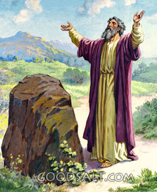
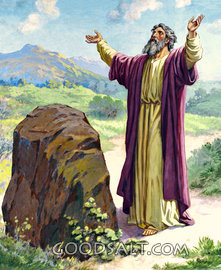

Saul
When Samuel is old, Israel asks for a king. Samuel tells them that a king would tax them heavily, and take their children to be in his army. Nevertheless, Israel says that they want to be like the other nations, with a king to lead them. Samuel anoints Saul, a tall Benjamite.
The Fall of Saul
Saul starts out as a good king, but he disobeys God by sacrificing a burnt offering to Him, something only a priest should do. He also saves some of the plunder from one of his battles although he was told to annihilate everything including the animals. Saul says that he was going to sacrifice them, but Samuel says:
1 Samuel 15:22He starts ignoring God's commands, and eventually, God decides that he would tear the kingdom from Saul and anoint a new king.
22But Samuel replied: “Does the Lord delight in burnt offerings and sacrifices as much as in obeying the Lord? To obey is better than sacrifice, and to heed is better than the fat of rams.”
David
God leads Samuel to Jesse, and he shows Samuel his sons. Samuel looks at his tall, strong, sons and tells himself, “Surely the next king must be among these.” However, God tells Samuel:
1 Samuel 16:7God shows Samuel to David, the youngest son who was tending the sheep, and he anoints him.
7But the Lord said to Samuel, “Do not consider his appearance or his height, for I have rejected him. The Lord does not look at the things people look at. People look at the outward appearance, but the Lord looks at the heart.”
David on the Run
When Saul hears that David has been anointed king, he gets mad and tries to kill him. David then takes off and is on the run for a long time. While he is on the run, Samuel dies. David has to wait until Saul dies before he can become king.